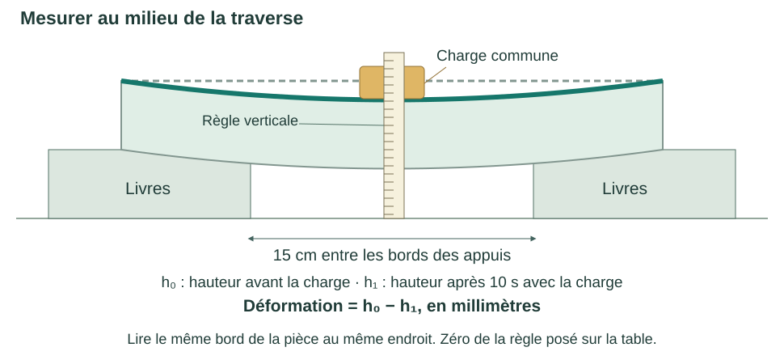

FABRIQUER · MESURER · AMÉLIORER
Une pièce cassée peut se remplacer
Réparer une miniétagère en papier
La tablette s’affaisse. Fabrique une traverse de remplacement, puis vérifie qu’elle porte la charge.
Les consignes sont à l’écran. Les croquis et les résultats restent sur votre feuille de classeur.
Matériel : trois feuilles A4 identiques, règle et crayon ; deux appuis de même hauteur et une petite charge commune fournie par le professeur.
SÉANCE 1 · OBSERVER
Q1 · Pourquoi remplacer la tablette ?
- Place deux piles de livres de même hauteur. Laisse 15 cm entre leurs bords intérieurs.
- Pose une première feuille A4 à plat, avec sa longueur de 29,7 cm entre les appuis. Centre-la pour qu’elle déborde autant des deux côtés.
- Mesure la hauteur du bord au milieu sans charge : h₀. Pose la charge au centre ; après 10 s, mesure la hauteur du même bord : h₁.
- Sur ta feuille : décris le défaut, note les deux hauteurs en mm, calcule h₀ − h₁ et nomme la pièce à remplacer. Si la charge tombe, note « échec » au lieu d’une mesure.
SÉANCE 1 · FABRIQUER
Q2 · Construis la traverse avec la deuxième feuille
Le plateau doit mesurer 5 cm de large ; les deux parois et les deux pieds mesurent chacun 4 cm. Ne découpe pas et n’ajoute ni colle ni ruban adhésif.
Toutes les étapes de fabrication
- Pose la feuille en portrait : largeur 21 cm et longueur 29,7 cm.
- Sur le bord du haut et celui du bas, marque 4, 8, 13 et 17 cm à partir du bord gauche. Relie les repères correspondants à la règle.
- Marque les quatre plis sur toute la longueur. Les cinq bandes mesurent 4, 4, 5, 4 et 4 cm.
- Garde la bande centrale de 5 cm horizontale. Rabats les bandes voisines vers le bas pour former deux parois de 4 cm. Replie les deux bandes extérieures vers l’extérieur : elles forment les pieds.
- Pose les deux pieds sur la table. Vérifie les cotes et redresse les parois. La longueur de la traverse reste 29,7 cm.
Q3 · Qu’est-ce qui a changé ?
Sur ta feuille : dessine la traverse vue par le petit côté. Cote le plateau, une paroi et un pied. Nomme le matériau et explique l’action du pliage sur la matière.
La feuille plate et la traverse sont toutes deux en papier. Observe le rôle des plis et des parois dans leur forme.
Aide · Les procédés
- Plier : mettre la matière en forme.
- Découper : retirer de la matière.
- Imprimer en 3D : ajouter de la matière par couches.
SÉANCE 2 · MESURER
Q4 · La pièce de remplacement tient-elle mieux ?
Remplace la feuille plate par la traverse. Les pieds reposent sur les deux appuis ; la charge est posée au centre du plateau.

Déformation = h₀ − h₁
Les trois valeurs sont en millimètres. Relève h₀ à nouveau avant chaque essai.
- Mesure h₀, pose la charge et attends 10 s ; mesure h₁.
- Retire la charge et recommence pour obtenir trois essais.
- Sur ta feuille, trace cinq colonnes de mesures plus le nom de la pièce : pièce · essai · h₀ (mm) · h₁ (mm) · déformation (mm) · tient 10 s ?
- Ajoute le résultat de la feuille plate de Q1. Compare les déformations.
Garde les mêmes appuis, le même écartement de 15 cm, la même charge et le même point de lecture. Si la charge tombe, note « ne tient pas 10 s ».
Q5 · Améliore une seule chose
Repère le défaut avant de modifier la pièce.
| Ce que tu observes | Une modification à essayer |
|---|---|
| Une paroi penche, la pièce bascule. | Redresser la paroi et vérifier que les deux pieds sont à plat. |
| Un pli s’ouvre. | Marquer plus nettement ce pli. |
| Un bord se déforme. | Replier ce bord pour le renforcer. |
Sur ta feuille : nomme le défaut, dessine la modification et écris le résultat que tu prévois. Refais ensuite trois essais dans les mêmes conditions et note les mesures.
Si la première traverse réussit déjà, utilise la troisième feuille pour comparer une variante. Une seule feuille reste autorisée par pièce.
Q6 · Valide ta réparation
Confronte ta dernière pièce aux trois exigences :
- Une seule feuille A4 utilisée ?
- La pièce tient-elle la charge pendant 10 s aux trois essais ?
- Chaque déformation est-elle ≤ 5 mm ?
Sur ta feuille : écris « validée » ou « à améliorer » et cite tes mesures. Explique ce que tu as conservé en remplaçant seulement la tablette, puis ce que le pliage a changé.